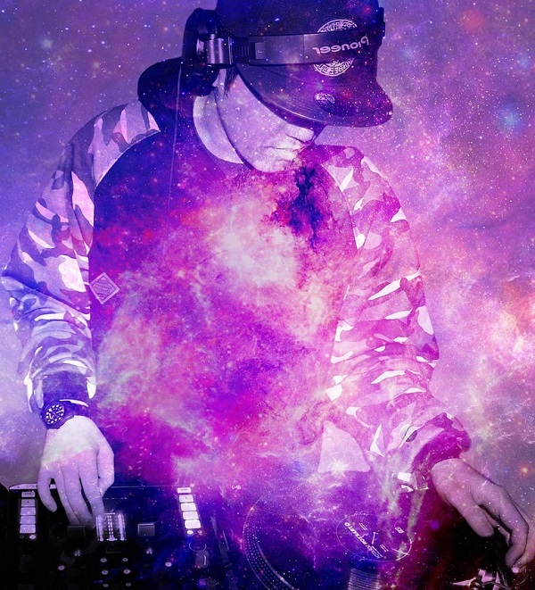

About Me

Austin Capps is a compliance professional and a software engineering student eager to take on new challenges in the exiciting field of Java development. Austin is currently located in the Dallas-Fort Worth area after spending the last five years in Chicago.
Austin Capps attended the University of Texas at Dallas and received a Bachelor's in Economics. Austin atttended DePaul University's Kellstadt Graduate School of Business and received a Master's in Accountancy.
Past Experiences
| Years of Employment | Title | Company |
|---|---|---|
| 2019-present | Dev10 Candidate | Genesis10 |
| 2017-2019 | Senior IT Auditor | Schellman & Co. |
| 2015-2017 | Senior IT Auditor | RSM LLP |
Hobbies
- Point and Click Adventure Games
- Sam and Max Hit the Road
- The Secret of Monkey Island
- Day of the Tentacle
- EDM Festivals
- Spring Awakening
- Lights All Night
- Electric Daisy Carnival
- Authors
- John Scalzi
- Matt Taibbi
- Jeff Vandermeer
- Visual Artists
- Kelsey Longenacre
- Banksey
- Hieronymus Bosh